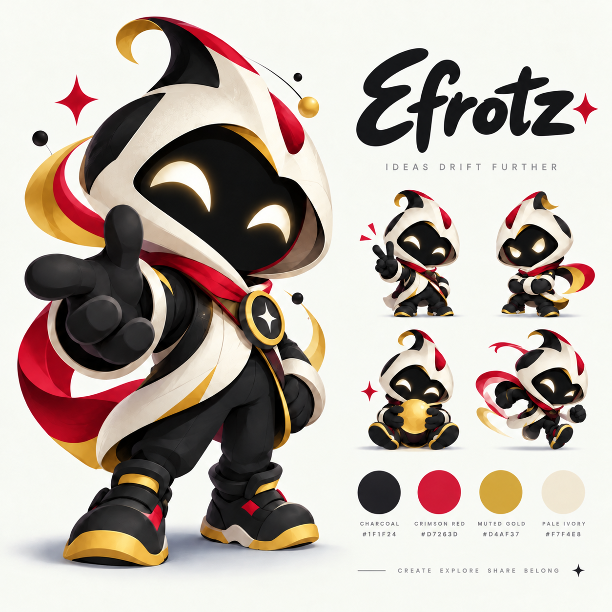
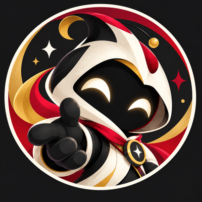
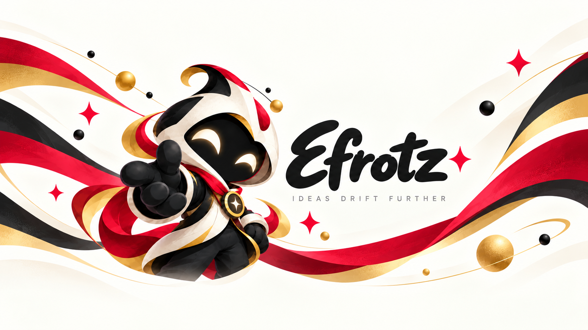
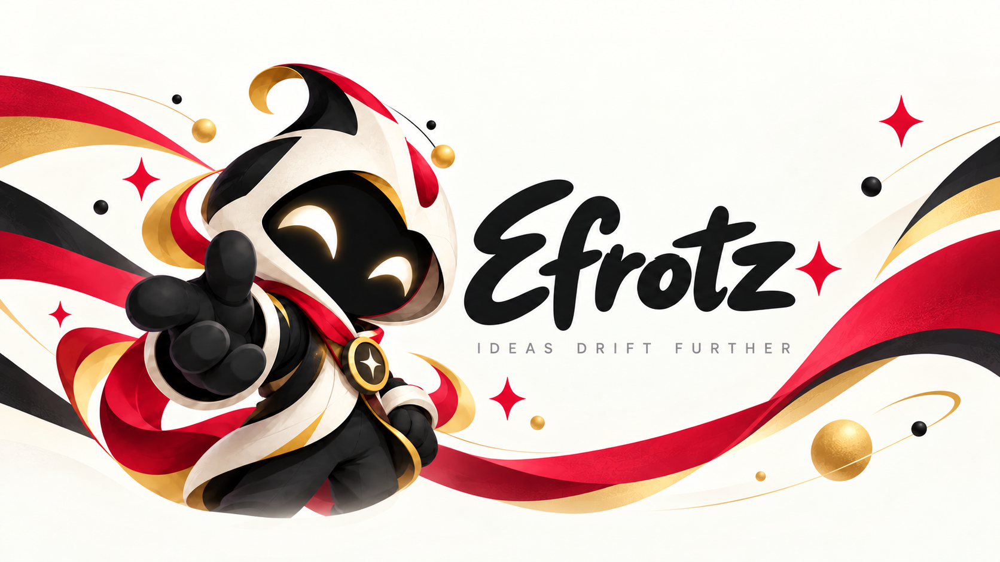
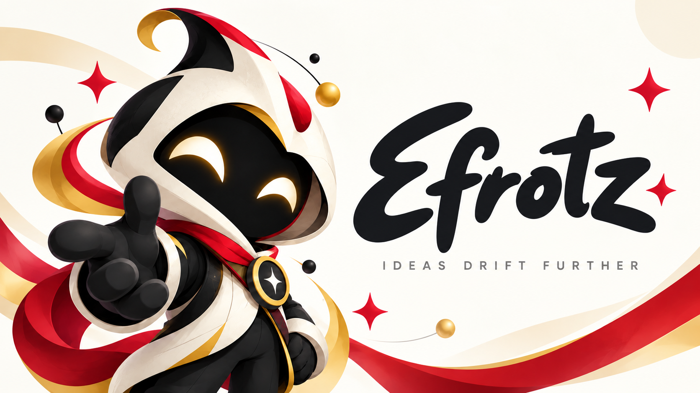
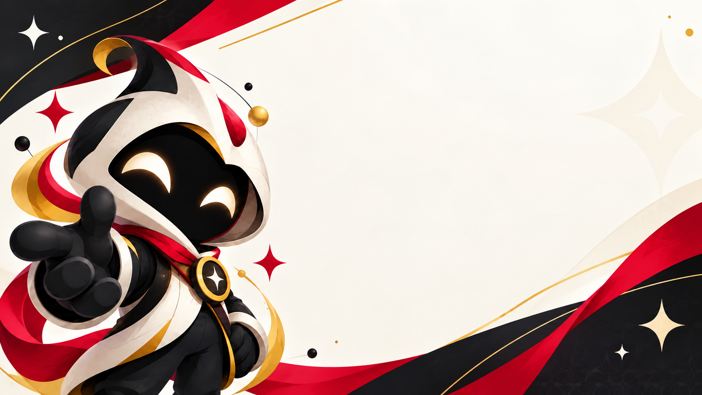

Canonical brand board
Open original imageIdeas Drift Further. Original artwork, preserved unchanged.
Open an image to obtain its direct URL. Platform crops still need review.

Canonical brand board
Open original imagePrimary avatar master
Open original image
400px avatar; existing repository file preserved
Open original imageMascot and original wordmark lockup
Open original imageFull-body mascot
Open original imageCircular badge
Open original image
YouTube source composition; platform crop not certified
Open original image
X header source composition; platform crop not certified
Open original image
Community banner matching the successful direct upload in the Discord screenshot
Open original image
Reusable background; not a final episode thumbnail
Open original image